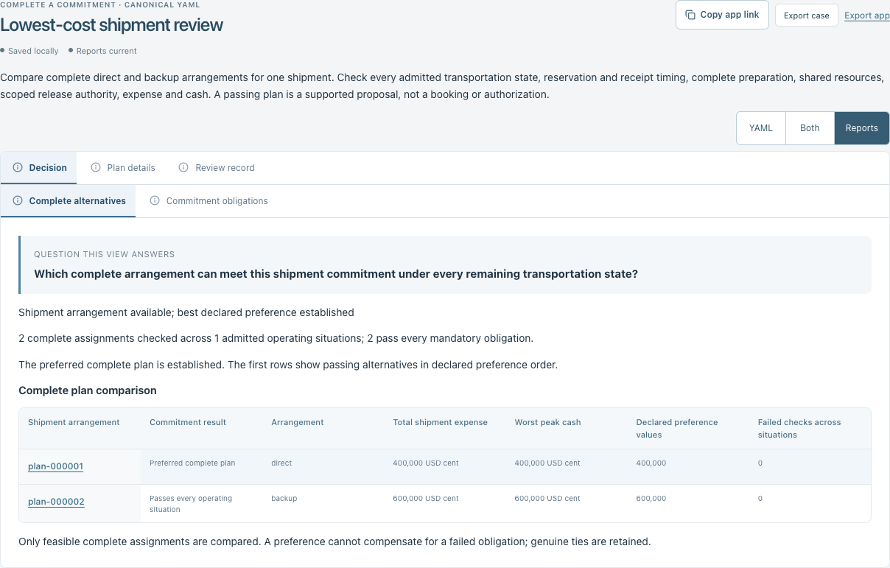

DecisionLab Marketplace brings reusable decision apps and guided workflows into collections for the work you do. Find a domain, inspect its use cases and open a review with your own case information.
A shipment lead and a gift-kit campaign owner face different problems. Both need to know which complete options meet their requirements, what blocks the others and which passing option to prefer. That recurring structure is a decision pattern.
One decision pattern. Two kinds of work.
These two apps use Complete a Commitment: check complete arrangements against the recorded requirements, then compare those that pass. Both screens put expense first. The shipment app checks freight arrangements; the gifting app checks complete correction packages.
Shipment readiness


Direct is preferred at $4,000. Backup also passes at $6,000. Maya can inspect the requirements behind either arrangement before putting forward a shipment proposal.
Gift-kit readiness

Internal replacement and repair, shown as arrangement 4, is preferred at $300. Confirmed external work, arrangement 5, also passes at $400. Partial fixes remain blocked.
Look for the same sequence: question, finding, comparison and supporting details. A familiar screen lets people find the conclusion and inspect its basis across domains. Each review retains its own business rules and case-specific evidence, permissions and information.
Other reusable decision patterns help establish what evidence supports or assess whether further learning is worth its cost and timing. A workflow can connect these reviews around a larger decision.
From a reusable pattern to a working case.
Template authors create the reusable structure
A template gives the pattern an executable structure: the inputs, checks and kinds of findings it supports. Template authors use the creation tools to define and validate that foundation.
App authors configure it for particular work
An app supplies domain concepts, requirements, priorities and starting information. Authors can also connect published apps into a guided workflow, with shared questions and review responsibilities.
Case workers review a particular situation
A case holds the information for one situation. Workers review its facts, inspect calculated findings and update the case when circumstances change. The published release retains the rules used for that review.
Find your domain. Start a review.
A collection groups apps and workflows for a domain. Its use cases organize them around specific work. For example, Order fulfillment → Review a first shipment contains a guided review connecting evidence, shipment planning and the value of verification.
- Open Decision Lab, choose Marketplace, then View collection for Order fulfillment.
- Inspect the questions and included reviews, then choose Install collection. The collection opens in Collections.
- Choose Use app for a standalone question, or Try worked example for a guided workflow with supplied inputs. Use Start review to begin your own workflow case.

Scroll to inspect the screen, or open it at full size.
The decision brief leads. The next task is clear.
A guided workflow opens its decision brief and Next review step. A new case shows what still needs review; as accepted findings become available, the brief brings the supported proposals together.

Scroll to inspect the screen, or open it at full size.
Opening the next task takes you to the required review. You still review the answer and explicitly evaluate and accept findings. The business proposal and the next review task serve different purposes.
Within an assessment, start with the finding. Open Selected option details when a requirement or schedule needs attention. Technical inspection → Inspect complete report keeps the complete analysis available on request.
Explore the shipment series or the gifting series to follow these decisions as the options, requirements and supporting records change.